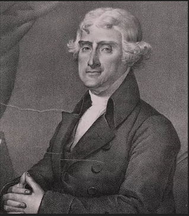

Как пираты судьбу метра в США решили.
Часть первая
В чём измеряется диагональ вашего монитора? В дюймах! И это логично, ведь большая часть производителей, потребителей и «законодателей мод» высоких технологий пришла из США.
И в этой стране продавать дюймовые штуки было банально проще, чем объяснять населению, что такое сантиметр и как он соотносится с привычной для них системой. Почему же они не перешли на вполне логичную, понятную и привычную всему миру систему? Ведь сейчас США вместе с Либерией и Мьянмой (отличная компания, да?) является страной, которая так и не приняла метрическую систему, оставив для себя что что-то своё, родное и уютное. Галлоны, дюймы, мили и прочие короткие тонны (кстати, вы ведь в курсе, что в США есть примерно десяток их разновидностей?). Но в конце XVIII века у американцев был шанс всё изменить. Помешал случай и… пираты
Часть вторая
Как мы помним из уроков истории, долгое время эта страна была одной из колоний Англии. В Британских колониях, как это вполне закономерно звучит, использовалась Британская же система измерения. Вот как раз те самые дюймы и мили. Но, после того, как США обрели независимость от «Империи над которой никогда не заходит солнце» они задумались — куда же им теперь податься, чтобы уж совсем наверняка отринуть всё Имперское и сделаться умными и красивыми. В их стране царила какая-то дикая смесь разных систем измерения — голландской, английской и случайно выдуманных отдельными гениальными самородками в состоянии запоя. В 1790-х годах Томас Джефферсон, как раз ставший государственным секретарём (по статусу третий после президента и вице-президента), наконец-то решил, что хватит это терпеть и волевым усилием замахнулся повернуть Америку в сторону цивилизации и стандартизации.
Так как США находились в довольно плотной оппозиции с Британией, то Америке по принципу «враг нашего врага — наш друг» симпатизировала Франция. И, о чудесное совпадение, именно в этой стране изобрели новомодную, простую, понятную и, главное, очень цивилизованную и стандартизированную метрическую систему. Приятным бонусом было тот факт, что её принятие, положительно бы повлияло на дальнейшие взаимоотношения (в основном, торговые) Франции и США. Всё так замечательно сходилось. Ну а то, что Джефферсон был известным франкофилом, было приятным дополнением к этому всему. Решение казалось уже практически принятым, и пора бы населению закупаться новыми линейками и гирьками... Но... Но даже третий по статусу в США не может просто взять и сказать — «а давайте теперь мы будем пользоваться совсем другой системой». И все такие — «да, отличная идея, начинаем завтра, раз уж ты предложил, то никаких вопросов». Нет, для таких решений нужна последовательность. Убедить одну фракцию, потом другую, затем вытащить всё это на общее одобрение и так далее. Короче, чтобы убедить конгресс на такой шаг, Джефферсону нужен был какой-нибудь демонстрационный материал и желательно кто-то, близко знакомый с метрической системой. Этим кем-то стал Джозеф Домби — французский натуралист.
|  |
Джозеф Домби. Врач, ботаник, путешественник, натурфилософ. Правда об этом никто уже и не вспомнит. Но вот стоило ему один раз столкнуться с пиратами...
Именно он в 1793 году отправился на корабле из Франции в США, чтобы совместно с Джефферсоном продемонстрировать Конгрессу все достоинства новой системы. Простоту конвертации, удобство использования и так далее. В нагрузку к собственному красноречию и знаниям он вёз из Багетленда два эталона — медный стержень размером ровно один метр и медный цилиндр весом ровно один килограмм (тогда эта единица называлась грав (grave) от слова «гравитация»). Подобные штуки делались с соблюдением всяческих норм, с высокой точностью и были довольно редкими и ценными (эталонов грава к тому времени было произведено всего лишь шесть экземпляров). С такими ценными вещами на борту корабль двигался очень осторожно.
Вот. Это грав, а не «гирька из советского магазина».
А потом произошло то, что предсказать было сложно — погода. В результате внезапного шторма корабль отнесло в сторону Карибского моря. Где, как мы все прекрасно знаем, обитали страшные и жуткие пираты. Судно шло под французским флагом и вскоре его заметили английские каперы. То есть, чисто юридически это были не совсем пираты в общем понимании, а скорее вооружённые частные корабли, которым правительство Англии разрешило атаковать вражеские суда. И это определение прекрасно подходило к тому паруснику, на котором плыл Домби. Франция, как раз в это время воевала с Англией и поэтому юридически-не-пираты смело рванули в бой, предвкушая неплохую прибыль. Два каперских корабля легко взяли на абордаж судно и, захватив пленников, доставили их к ближайшей территории Англии — острову Монтсеррат.
За Джозефа Домби, как за человека из высшего общества пираты надеялись получить выкуп. К сожалению, натурфилософ так и не дождался момента освобождения и умер в плену. Ну а корабль и все вещи, найденные на нём, были распроданы или просто выброшены в воду. Такая судьба, похоже, постигла и драгоценные метрические эталоны. Для пиратов они было не больше чем простыми железяками, а не редким и тщательно отмеренным экземпляром предвестника грядущей эры стандартизации. Так что первое метрическое паломничество в США оказалось неудачным. Без должной информационный поддержки и презентации Томас Джефферсон не смог доказать Конгрессу превосходство таких странных штук как метр и килограмм над привычными дюймом и стоунами. И тема заглохла сама собой. По мнению многих — именно это определило последующую судьбу СИ на США. Тогда довольно легко предпринимались довольно сложные решения, нация была молода, мечтала отделить себя от Имперской Британии, и тянулась ко всему новому. Томас Джефферсон горел идеями и был решительный. А уже через год после этих событий он уже совершенно отошёл от должности госсекретаря и решил побороться за кресло следующего президента США. В общем, теперь мысли экс-госскретаря занимали проблемы совсем иного уровня. Более интересные, важные и ответственными, так что времени на всякую мелочь не хватало. Метры? Килограммы? У меня здесь куча соперников, которым надо бы отомстить. На его место пришёл Эдмунд Рэндольф со своим ведением важности и приоритизации проблем государства. Проще говоря — вот лично Эдмунду на стандартизацию единиц измерения было совершенно пофиг.
Привет, я Эдмунд и мне совершенно пофиг.
Поэтому следующая французская делегация, которая решила поинтересоваться на тему: «Как насчёт приобрести у нас классную метрическую систему, лучшую в мире», получила отказ. Там как раз во Франко-Американских отношениях наступила прохлада и это было в какой-то степени политическим решением. Вскоре во Франции к власти пришёл Наполеон и США вообще поставили крест на метрической системе. Лягушатникам бы там у себя метр удержать, а не вернуться ко всяким лье и бушелям с этим корсиканским чудовищем. Для самоуспокоения тогдашний госсекретарь Джон Квинси в 1821 году провёл инспекцию в этом аспекте и решил, что и наша система — хороша и понятна большинству, нечего нам прививать все эти западны... блин, восточные ценности. Наша U.S. Customary System (традиционная система США) самая Customary, идите нафиг. Но где-то после Гражданской войны американский истеблишмент вновь огляделся и понял, что большинство стран уже давным-давно перешли на метрическую систему. И у них всё хорошо работает. Торгуется, наука там развивается, какие-то диалоги налажены, а мы здесь как идиоты с ненавистной Англией тупим в одной комнате метроненавистников.
Согласитесь, что пост был бы не полон без этой картинки?
Американцам оставалось только запрыгнуть на подножку последнего вагона. И с присущей им грацией они это... сделали. Да. В 1866 году Конгресс страны наконец-то постановил, что метрическая система является официальной для использования во всех контрактах, сделках и судебных процессах. Чтобы всем было проще, было объявлено, что ярд равен 0,914401 метра, а фунт как 0,4535924277 килограмма. Вооот, теперь-то заживём, правда? Всё реднеки быстро научится умножать свои ярды на эти легко запоминающиеся числа и будет просто отлично. Но вот только это всё совершенно не касалось жизни обывателей. Акт носил скорее рекомендательный характер, а не принудительный. Перейти могли те, кто очень хотел. Ну а таких, как вы понимаете было немного. Что не помешало США в 1890 (спустя практически сто лет после миссии Домби) наконец-то получить свои законные стандарты метра и килограмма. Но, люди их отвергли в моральном плане.
Что не мешает правительству США заявлять, что мы еще не начинали, и все идет по плану. Вот, смотрите у нас есть области где 100% метрические единицы. Секунды, например.
И всё это получилось потому, что существовали две проблемы. Первая — деньги. Выяснилось, что в масштабе страны на это нужны просто олимпиарды долларов. В одну из последних попыток внедрения метрических единиц NASA ради интереса выяснила, сколько будет стоить перевести на систему документацию, программное обеспечение и чертежи шаттла. После этого они схватились за голову: выходило примерно 370 миллионов долларов. Для сравнения — стоимость запуска этого шаттла на орбиту — 760 миллионов. Немного дороговато, получалось. Вторая — упорство жителей. В той же Франции между внедрением метрической системы и её полным принятием населением прошло в районе сорока лет. Да и то, там законы были более жёсткими. А в США 23 декабря 1975 года президентом Джеральдом Р. Фордом подписан очередной закон о переходе на метрическую систему... и всё. Никаких установленных временных рамок, минимум требований. Люди сами должны выбирать, как мерить. У нас свободная страна, знаете ли. Мы вот даже Метрическую комиссию создадим. Пусть они... ну не знаю, попытаются всех убедить в полезности. Комиссия не смогла и в 1982 году её упразднили.
И еще одна популярная картинка (цитата из книги «Wild Thing» Джоша Бейзела).
В 1988 году США ещё раз попытались в метры. И даже демонстративно постучали кулачком по столу, сказав, что метрическая система — предпочтительна для нужд торговли и коммерции. Но всё это коснулось лишь государственных структур. Бизнес опять не удалось заинтересовать лёгкостью расчётов и конвертации. Да, в школах вроде как учат детей СИ, но они потом приходят домой и опять галлоны и дюймы. Всё это вылетает из головы. По статистике в США на эту систему рассчитано всего лишь 30% продукции. Ну и фармацевтика. Единственная индустрия в стране, где царит строгая метричность. Над всем остальным довлеет имперская... в смысле традиционная система США. Вы вообще в курсе, что в этой стране используется 300 различных единиц в разнообразных областях науки и техники? Вот вам список, ознакомьтесь. После того как в 1995 году официально Англия перешла на метры, США заявила, что теперь дело не в деньгах, а в традиции, и присвоили себе все старые единицы измерения. Мол, мы тут власть и пусть остальной мир прогибается под нас. Консерватизм и патриотизм. Пожалуй, стоит признать, что именно эти причины не дают американцам войти в общемировую систему на равных. Ну и, конечно же, пираты…
Только представьте, как выглядел бы мир сейчас, если бы не пираты.